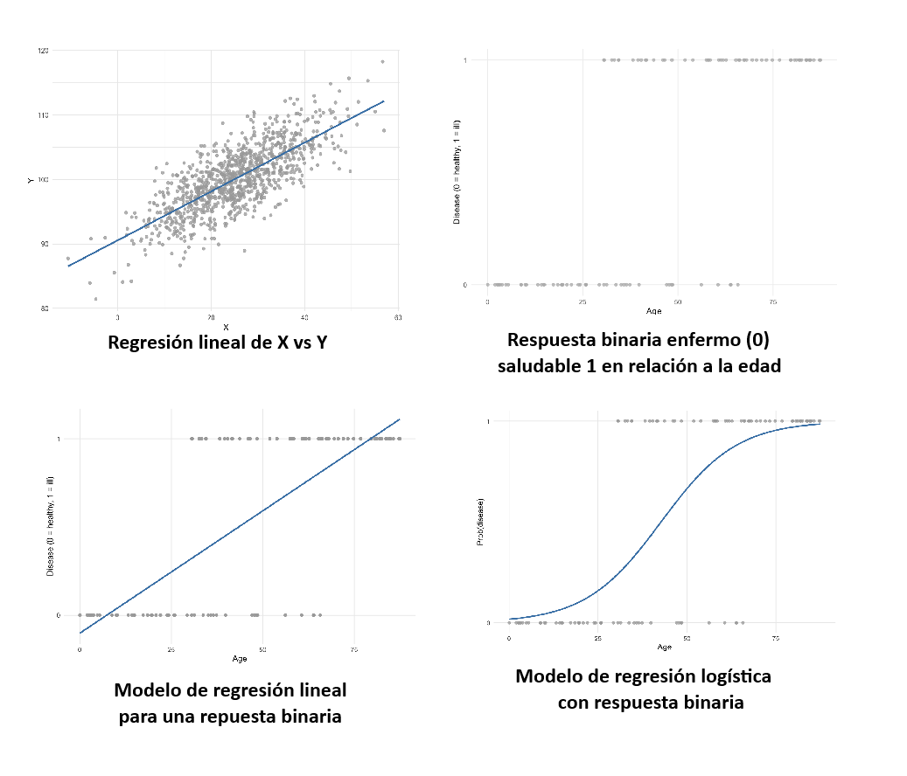
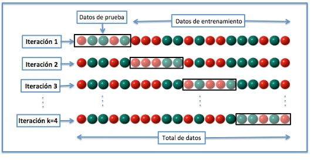
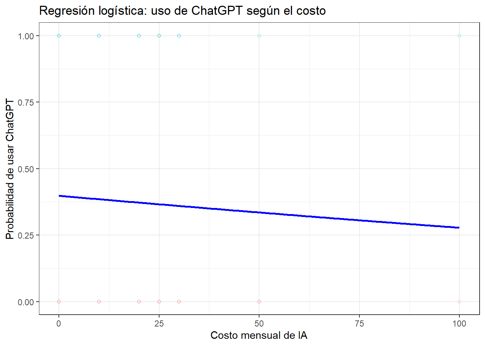

Se utiliza para predecir la probabilidad de un resultado binario (dos posibles resultados, como “sí” o “no”, “1” o “0”) basado en uno o más predictores, que pueden ser variables continuas o categóricas.
Variable Dependiente Binaria: Variable binaria con dos categorías.
Variables Independientes: Puede incluir múltiples predictores, pueden ser tanto continuas como categóricas.
No se modela directamente el resultado (ausencia/presencia de la enfermedad), sino la probabilidad de que un paciente la padezca o no, dadas sus características.La clasificación o asignación a una de las categorías depende del límite o threshold que se establezca.
\[P(Y=k|X=x)\]
Función Logística: Utiliza la función logística para modelar la probabilidad de que la variable dependiente tome un valor específico (por ejemplo, “1”).
\[p(x)=\frac{e^{\beta_0+\beta_1X}}{1+e^{\beta_0+\beta_1X}}\] estafunción produce una curva en forma de S, comprendiendo los valores de Y entre o y 1, la ecuación anterior puede escribirse como
\[\frac{p(x)}{1-p(x)}=e^{\beta_0+\beta_1X}\] Donde \(\frac{p(x)}{1-p(x)}\) corresponde al odds ratio pudiendo tomar cualquier valor entre 0 y 1
si aplicamos logaritmo a ambos lados obtenemos una función lineal
\[log \left(\frac{p(x)}{1-p(x)}\right)=\beta_0+\beta_1X\]
Aplicaciones
Determinar si un préstamo se aprueba o no en función de predictores como la cantidad de ahorros, los ingresos y la puntuación crediticia
predecir si un correo electrónico es spam o no
si un tumor es maligno o no.
Binaria Estima la relación entre una variable dependiente binaria (dos resultados) y una o más variables independientes (de cualquier tipo).
Multinomial Estima la relación entre una variable dependiente nominal con tres o más resultados ordenados o no y una o más variables independientes (de cualquier tipo).
ejemplos mediante el diagrama de dispersión

La división se usa en cualquier modelo predictivo basado en datos como:

Conjunto de Entrenamiento (Train Set)
Es la porción con la que el modelo “aprende”. El modelo ve estos datos directamente durante el proceso de optimización.El algoritmo analiza los datos de entrada y sus etiquetas (en aprendizaje supervisado) para ajustar sus parámetros internos y pesos.
Conjunto de Validación (Validation Set)
Porcentaje habitual: 10% al 15% del total de datos.
Se utiliza de forma intermitente para comparar diferentes variantes o arquitecturas de modelos. Ayuda a detectar y prevenir el sobreajuste (overfitting) mediante técnicas como la detención temprana (early stopping).
Aunque el modelo no se “entrena” directamente con estos datos, sí influyen indirectamente en las decisiones que toma el desarrollador para elegir cuál es el mejor modelo.
Conjunto de Prueba (Test Set)
Porcentaje habitual: 10% al 15% del total de datos.
Es una evaluación final, ciega e imparcial. Mide qué tan bien es capaz de generalizar el modelo elegido cuando se enfrenta a datos totalmente nuevos que jamás ha procesado antes.
Debe mantenerse estrictamente oculto hasta el final del proyecto. Si usas el conjunto de prueba para modificar o reajustar el modelo, contaminas la evaluación y pierdes la objetividad sobre su rendimiento real.
Proporciones comunes y alternativas
Estándar (70 / 15 / 15) o (80 / 10 / 10) para conjuntos de datos grandes.
Validación cruzada (Cross-Validation, ej. K-Fold): Se recomienda especialmente cuando tienes datasets pequeños, ya que divide los datos en K partes para rotar el rol de entrenamiento y validación y aprovechar al máximo la información disponible sin desperdiciar muestras.
Series de tiempo: En datos temporales no se debe mezclar ni dividir de forma aleatoria; se debe respetar el orden cronológico estricto (ej. entrenar con el pasado, validar con el presente intermedio y probar con el futuro) para evitar fugas de información (data leakage).
Matriz de confusión
Tabla que muestra el rendimiento de un modelo de clasificación al comparar sus predicciones contra los valores reales. Se aplica exactamente sobre los conjuntos de validación y prueba para descubrir en qué categorías acierta el algoritmo y en cuáles se equivoca.
| Predicción: | Positivo (1) | Negativo (0) |
|---|---|---|
| Realidad: Positivo (1) | Verdadero Positivo (VP): Acierto al detectar el caso positivo. | Falso Negativo (FN): no detectó el caso |
| Realidad: Negativo (0) | Falso Positivo (FP): Falsa alarma (predijo positivo pero era negativo) | Verdadero Negativo (VN): Acierto al descartar el caso negativo. |
Ejemplo
El conjunto de datos Uso e impacto de la IA en estudiantes y profesionales se centra en comprender cómo las personas utilizan las herramientas de IA en educación, trabajo y actividades diarias.
El conjunto de datos incluye tanto a estudiantes como a profesionales, lo que nos permite comparar sus patrones de uso de la IA y comprender cómo la IA afecta a diferentes grupos de usuarios.
Variables
| Variables | Variable | Niveles | |
|---|---|---|---|
| País | Profesión | estudiante y profesional | |
| edad | nivel educativo | ||
| Ingresos | tipo de usuario | ||
| Genero | herramientas de IA | ChatGPT, Gemini, Claude, Copilot y otras | |
| propósito principal para el que se utiliza la IA | |||
| Horas de uso de IA | |||
| Productivity_Score | |||
| Accuracy_Rating | |||
| Satisfaction_Score | |||
| Time_Saved_Hours_Per_Week | |||
| AI_Experience_Years |
Se ha creado la variable binaria uso de chat gpt como 1, y 0 en otro caso de usar otra IA,
# Dirección de descarga del dataset
url <- paste0(
"https://www.kaggle.com/api/v1/datasets/download/",
"eishatuzzuhra/ai-usage-and-impact-on-students-and-professionals"
)
# Descargar a un archivo temporal
archivo_zip <- tempfile(fileext = ".zip")
download.file(url, archivo_zip, mode = "wb")
# Identificar los archivos CSV del dataset
contenido <- unzip(archivo_zip, list = TRUE)
archivos_csv <- contenido$Name[
grepl("\\.csv$", contenido$Name, ignore.case = TRUE)
]
if (length(archivos_csv) != 1L) {
print(contenido$Name)
stop("Se esperaba un CSV. Revisa la lista de archivos del dataset.")
}
# Leer el CSV desde el ZIP
conexion <- unz(archivo_zip, archivos_csv[1])
datos <- read.csv(conexion, stringsAsFactors = FALSE)
# Eliminar la variable Tasks_Performed
datos$Tasks_Performed <- NULL
datos$User_ID=NULL# Crear variable categórica: ChatGPT = 1; otras IA = 0
datos$Uso_ChatGPT <- factor(
ifelse(
tolower(trimws(datos$AI_Tool)) == "chatgpt",
1,
0
),
levels = c(0, 1)
)
# Verificar los resultados
table(datos$Uso_ChatGPT, useNA = "ifany")##
## 0 1
## 181 119str(datos$Uso_ChatGPT)## Factor w/ 2 levels "0","1": 2 2 1 1 1 1 2 2 1 2 ...head(datos)## Age Gender Country User_Type Education_Level
## 1 30 Male United Kingdom Professional Master's
## 2 30 Male United States Professional Bachelor's
## 3 17 Male Canada Student
## 4 35 FEMALE Brazil Professional Bachelor's
## 5 19 Female Canada Student Undergraduate
## 6 19 United States Student Undergraduate
## Profession Monthly_Income AI_Tool
## 1 Business Analyst 5421 ChatGPT
## 2 Customer Support Specialist 8903 ChatGPT
## 3 Computer Science Student 402 Chat GPT
## 4 Desenvolvedora de Software / Software Developer 1367 Meta AI
## 5 Biology Student 438 Perplexity AI
## 6 Business Analytics Student 774 Meta AI
## AI_Purpose AI_Usage_Hours_Per_Day Monthly_AI_Cost Productivity_Score
## 1 Office Work 2 hrs 5.3
## 2 Customer Support 5.7 0 9.9
## 3 Coding 1 hrs 20 3.2
## 4 Coding 1.7 20 5.6
## 5 4.1 0 4.7
## 6 Data Analysis 1.5 0 5.0
## Accuracy_Rating Satisfaction_Score Time_Saved_Hours_Per_Week
## 1 4 7 3.9
## 2 3 9 11.4
## 3 2 4 5.2
## 4 4 5 6.4
## 5 4 7 9.2
## 6 3 6 2.9
## Work_or_Study_Hours_Per_Day Would_Recommend Uso_ChatGPT
## 1 7.3 Yes 1
## 2 8.4 hrs Yes 1
## 3 6.7 No 0
## 4 9.6 Maybe 0
## 5 6.2 Yes 0
## 6 7.4 No 0se quiere determinar la probabilidad o riesgo de que cada uno de los usuarios hagan uso de Chat gpt, tratemos de ajustar un modelo de regresión lineal
library(ggplot2)
bas <- data.frame(
Uso_ChatGPT = datos$Uso_ChatGPT,
costo = as.character(datos$Monthly_AI_Cost)
)
# Quitar el signo $ y los espacios de los extremos
bas$costo <- trimws(gsub("$", "", bas$costo, fixed = TRUE))
# Eliminar filas sin costo
bas <- bas[!is.na(bas$costo) & bas$costo != "", ]
# Convertir costo a número
bas$costo <- as.numeric(bas$costo)
## modelo logistico
modelo_logistico <- glm(
Uso_ChatGPT ~ as.numeric(costo),
data = bas,
family = binomial(link = "logit"))
summary(modelo_logistico)##
## Call:
## glm(formula = Uso_ChatGPT ~ as.numeric(costo), family = binomial(link = "logit"),
## data = bas)
##
## Coefficients:
## Estimate Std. Error z value Pr(>|z|)
## (Intercept) -0.414100 0.149144 -2.777 0.00549 **
## as.numeric(costo) -0.005406 0.009084 -0.595 0.55176
## ---
## Signif. codes: 0 '***' 0.001 '**' 0.01 '*' 0.05 '.' 0.1 ' ' 1
##
## (Dispersion parameter for binomial family taken to be 1)
##
## Null deviance: 383.99 on 287 degrees of freedom
## Residual deviance: 383.63 on 286 degrees of freedom
## AIC: 387.63
##
## Number of Fisher Scoring iterations: 4# Valores de costo para dibujar la curva
curva <- data.frame(
costo = seq(
min(bas$costo, na.rm = TRUE),
max(bas$costo, na.rm = TRUE),
length.out = 200
)
)
curva$probabilidad <- predict(
modelo_logistico,
newdata = curva,
type = "response"
)
# Gráfico
ggplot(bas, aes(x = costo)) +
geom_point(
aes(
y = as.numeric(as.character(Uso_ChatGPT)),
color = Uso_ChatGPT
),
shape = 1,
alpha = 0.5
) +
geom_line(
data = curva,
aes(y = probabilidad),
color = "blue",
linewidth = 1
) +
theme_bw() +
labs(
title = "Regresión logística: uso de ChatGPT según el costo",
x = "Costo mensual de IA",
y = "Probabilidad de usar ChatGPT"
) +
theme(legend.position = "none")